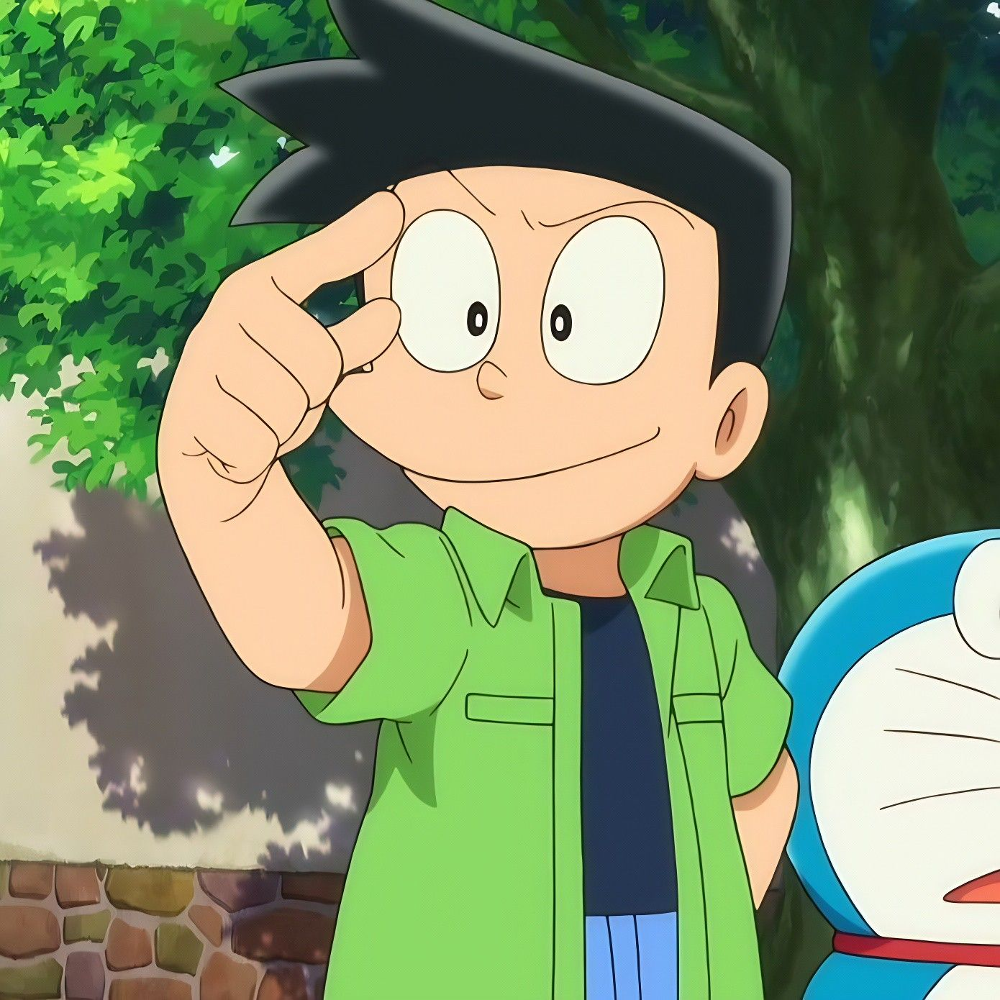
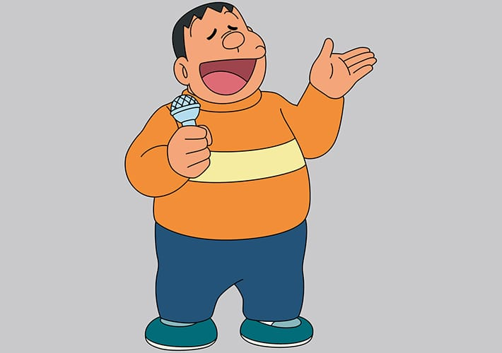

DAFTAR KARAKTER DORAEMON
DORAEMON

Doraemon adalah robot kucing biru dari abad ke-22 yang datang untuk membantu Nobita.
Ia punya kantong ajaib berisi alat-alat masa depan, seperti Pintu Kemana Saja dan Baling-Baling Bambu.
Meski sering jengkel sama kelakuan Nobita, Doraemon tetap setia mendampingi dan selalu cari solusi dari setiap masalah.
kembali ke atas
NOBITA

Nobita adalah anak yang ceroboh, pemalas, dan sering dapat nilai jelek di sekolah.
Tapi di balik kelemahannya, dia punya hati yang baik dan sangat peduli dengan teman-temannya.
Ia sering bergantung pada Doraemon, tapi tetap punya keberanian dalam situasi-situasi genting.
kembali ke atas
SHIZUKA

Shizuka Minamoto adalah gadis cerdas, sopan, dan rajin belajar.
Dia suka bermain biola dan mandi air hangat.
Shizuka adalah sosok yang penyayang dan sering menjadi penengah saat teman-temannya bertengkar.
Ia juga menjadi sosok yang paling diidamkan Nobita.
kembali ke atas
SUNEO

Suneo Honekawa dikenal sebagai anak orang kaya yang suka pamer dan membanggakan barang-barangnya.
Ia pandai berbicara dan punya selera tinggi dalam mode.
Meskipun sering ikut-ikutan membully Nobita bersama Giant, Suneo sebenarnya punya sisi perhatian terhadap teman-temannya juga.
kembali ke atas
GIANT

Takeshi Gouda atau Giant adalah anak bertubuh besar dengan suara lantang dan kepribadian dominan.
Ia suka menyanyi meskipun suaranya memekakkan telinga.
Giant sering menakuti teman-temannya, tapi ia sangat sayang pada adiknya, Jaiko,
dan terkadang menunjukkan sisi lembutnya saat tidak sedang marah.
kembali ke atas
Tinggalkan Komentar